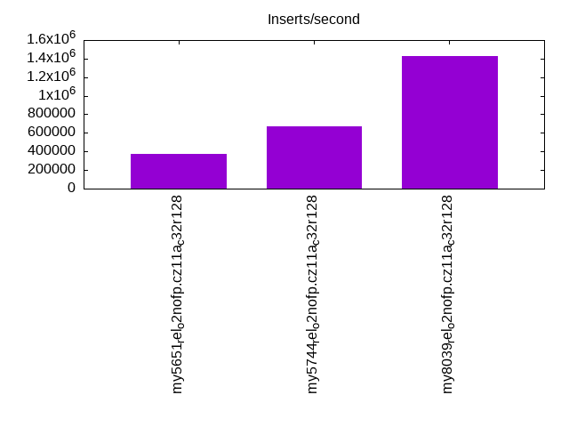
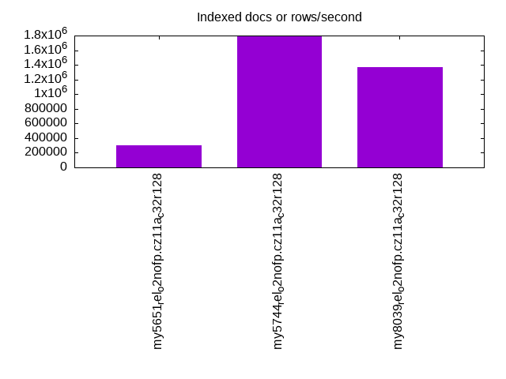
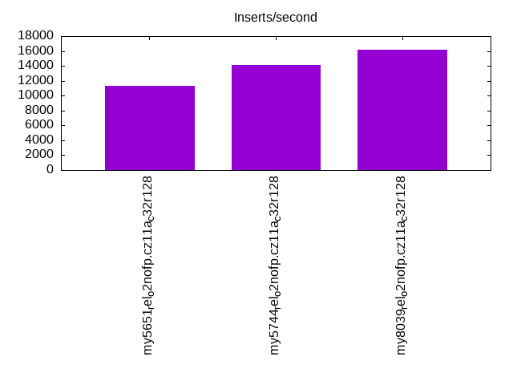
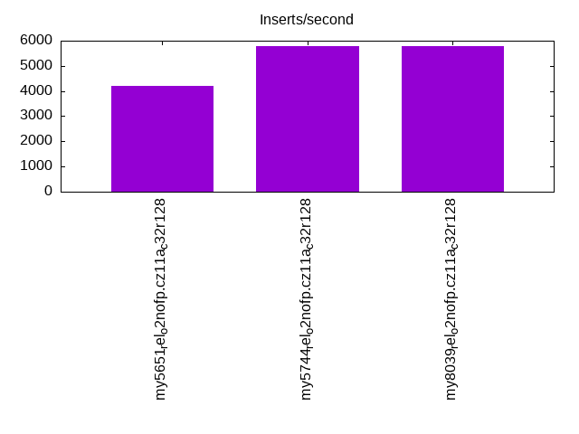
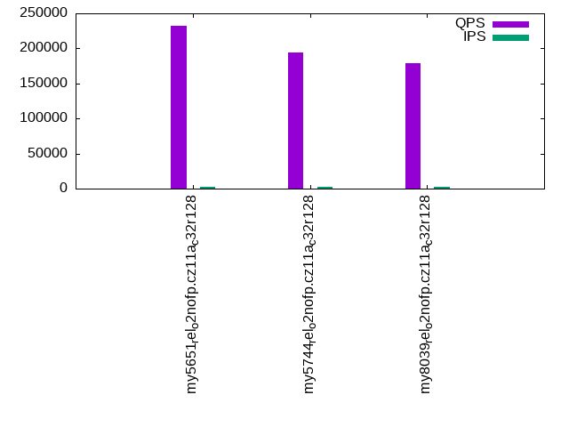
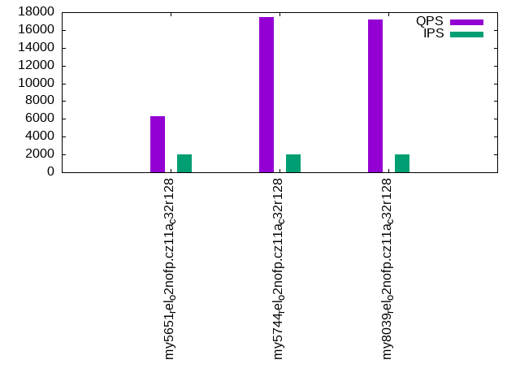
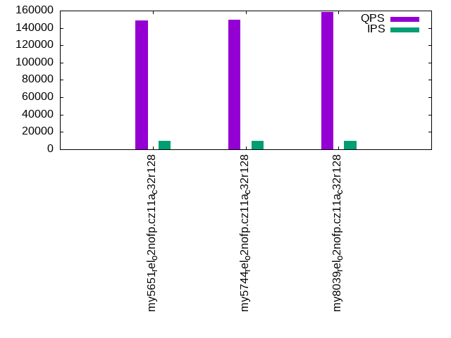
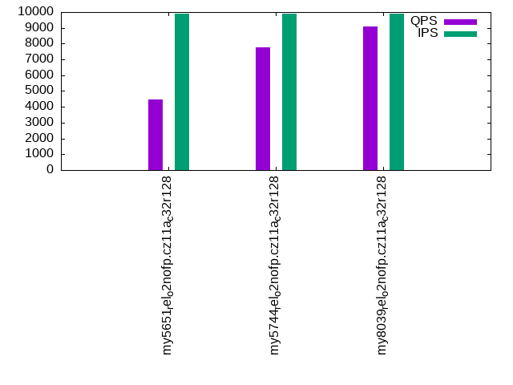
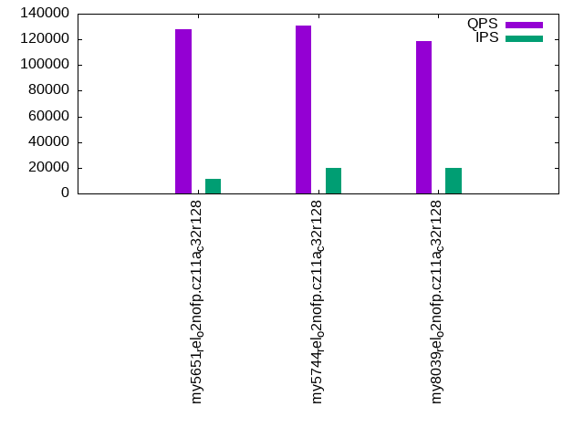
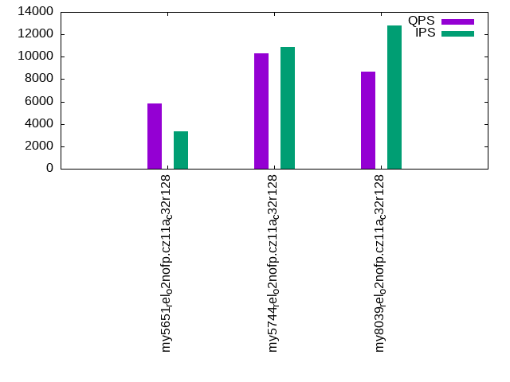

This is a report for the insert benchmark with 4000M docs and 20 client(s). It is generated by scripts (bash, awk, sed) and Tufte might not be impressed. An overview of the insert benchmark is here and a short update is here. Below, by DBMS, I mean DBMS+version.config. An example is my8020.c10b40 where my means MySQL, 8020 is version 8.0.20 and c10b40 is the name for the configuration file.
The test server is an ax162-s from Hetzner (see here) with 48 cores, AMD SMT disabled, 128G RAM and ext4 using 2 NVMe devices with SW RAID 1. The benchmark was run with 20 clients and there were 1 or 3 connections per client (1 for queries or inserts without rate limits, 1+1 for rate limited inserts+deletes). It uses 8 tables with a table per client. It loads 200M rows per table without secondary indexes, creates 3 secondary indexes per table, then inserts 4m+1m rows per table with a delete per insert to avoid growing the table. It then does 6 read+write tests for 1800s each that do queries as fast as possible with 100,100,500,500,1000,1000 inserts/s and the same for deletes/s per client concurrent with the queries. The database is larger than memory. Clients and the DBMS share one server.
The tested DBMS are:
The numbers are inserts/s for l.i0, l.i1 and l.i2, indexed docs (or rows) /s for l.x and queries/s for qr100, qp100 thru qr1000, qp1000" The values are the average rate over the entire test for inserts (IPS) and queries (QPS). The range of values for IPS and QPS is split into 3 parts: bottom 25%, middle 50%, top 25%. Values in the bottom 25% have a red background, values in the top 25% have a green background and values in the middle have no color. A gray background is used for values that can be ignored because the DBMS did not sustain the target insert rate. Red backgrounds are not used when the minimum value is within 80% of the max value.
| dbms | l.i0 | l.x | l.i1 | l.i2 | qr100 | qp100 | qr500 | qp500 | qr1000 | qp1000 |
|---|---|---|---|---|---|---|---|---|---|---|
| my5651_rel_o2nofp.cz11a_c32r128 | 371264 | 298352 | 11325 | 4215 | 232061 | 6318 | 148810 | 4456 | 128256 | 5839 |
| my5744_rel_o2nofp.cz11a_c32r128 | 672043 | 1793722 | 14164 | 5800 | 194689 | 17422 | 149680 | 7750 | 130415 | 10282 |
| my8039_rel_o2nofp.cz11a_c32r128 | 1429082 | 1367521 | 16129 | 5790 | 179440 | 17190 | 158454 | 9095 | 118613 | 8682 |
This table has relative throughput, throughput for the DBMS relative to the DBMS in the first line, using the absolute throughput from the previous table. Values less than 0.95 have a yellow background. Values greater than 1.05 have a blue background.
| dbms | l.i0 | l.x | l.i1 | l.i2 | qr100 | qp100 | qr500 | qp500 | qr1000 | qp1000 |
|---|---|---|---|---|---|---|---|---|---|---|
| my5651_rel_o2nofp.cz11a_c32r128 | 1.00 | 1.00 | 1.00 | 1.00 | 1.00 | 1.00 | 1.00 | 1.00 | 1.00 | 1.00 |
| my5744_rel_o2nofp.cz11a_c32r128 | 1.81 | 6.01 | 1.25 | 1.38 | 0.84 | 2.76 | 1.01 | 1.74 | 1.02 | 1.76 |
| my8039_rel_o2nofp.cz11a_c32r128 | 3.85 | 4.58 | 1.42 | 1.37 | 0.77 | 2.72 | 1.06 | 2.04 | 0.92 | 1.49 |
This lists the average rate of inserts/s for the tests that do inserts concurrent with queries. For such tests the query rate is listed in the table above. The read+write tests are setup so that the insert rate should match the target rate every second. Cells that are not at least 95% of the target have a red background to indicate a failure to satisfy the target.
| dbms | qr100.L1 | qp100.L2 | qr500.L3 | qp500.L4 | qr1000.L5 | qp1000.L6 |
|---|---|---|---|---|---|---|
| my5651_rel_o2nofp.cz11a_c32r128 | 1977 | 1977 | 9885 | 9885 | 11125 | 3306 |
| my5744_rel_o2nofp.cz11a_c32r128 | 1977 | 1977 | 9885 | 9885 | 19748 | 10870 |
| my8039_rel_o2nofp.cz11a_c32r128 | 1977 | 1977 | 9885 | 9885 | 19769 | 12798 |
| target | 2000 | 2000 | 10000 | 10000 | 20000 | 20000 |
l.i0: load without secondary indexes. Graphs for performance per 1-second interval are here.
Average throughput:
Insert response time histogram: each cell has the percentage of responses that take <= the time in the header and max is the max response time in seconds. For the max column values in the top 25% of the range have a red background and in the bottom 25% of the range have a green background. The red background is not used when the min value is within 80% of the max value.
| dbms | 256us | 1ms | 4ms | 16ms | 64ms | 256ms | 1s | 4s | 16s | gt | max |
|---|---|---|---|---|---|---|---|---|---|---|---|
| my5651_rel_o2nofp.cz11a_c32r128 | 0.164 | 10.763 | 88.563 | 0.473 | 0.037 | 0.173 | |||||
| my5744_rel_o2nofp.cz11a_c32r128 | 0.153 | 99.593 | 0.206 | 0.011 | 0.037 | 0.177 | |||||
| my8039_rel_o2nofp.cz11a_c32r128 | 0.099 | 99.788 | 0.060 | 0.014 | 0.039 | 0.245 |
Performance metrics for the DBMS listed above. Some are normalized by throughput, others are not. Legend for results is here.
ips qps rps rmbps wps wmbps rpq rkbpq wpi wkbpi csps cpups cspq cpupq dbgb1 dbgb2 rss maxop p50 p99 tag 371264 0 2185 8.5 2467.7 132.8 0.006 0.024 0.007 0.366 139954 37.7 0.377 49 263.2 363.7 107.1 0.173 17586 15184 my5651_rel_o2nofp.cz11a_c32r128 672043 0 2 0.0 4526.7 240.6 0.000 0.000 0.007 0.367 82544 46.0 0.123 33 263.2 363.7 108.1 0.177 34063 29169 my5744_rel_o2nofp.cz11a_c32r128 1429082 0 5 0.1 9725.7 531.2 0.000 0.000 0.007 0.381 297221 54.8 0.208 18 262.3 362.8 108.4 0.245 73820 61733 my8039_rel_o2nofp.cz11a_c32r128
l.x: create secondary indexes.
Average throughput:
Performance metrics for the DBMS listed above. Some are normalized by throughput, others are not. Legend for results is here.
ips qps rps rmbps wps wmbps rpq rkbpq wpi wkbpi csps cpups cspq cpupq dbgb1 dbgb2 rss maxop p50 p99 tag 298352 0 3998 264.7 16624.5 606.4 0.013 0.909 0.056 2.081 119028 35.8 0.399 58 557.3 657.8 107.8 0.003 NA NA my5651_rel_o2nofp.cz11a_c32r128 1793722 0 17853 1554.2 29637.8 1923.1 0.010 0.887 0.017 1.098 206052 25.9 0.115 7 605.8 706.3 105.4 0.002 NA NA my5744_rel_o2nofp.cz11a_c32r128 1367521 0 34508 1991.3 40701.9 1795.0 0.025 1.491 0.030 1.344 192617 57.8 0.141 20 603.6 704.2 104.9 0.007 NA NA my8039_rel_o2nofp.cz11a_c32r128
l.i1: continue load after secondary indexes created with 50 inserts per transaction. Graphs for performance per 1-second interval are here.
Average throughput:
Insert response time histogram: each cell has the percentage of responses that take <= the time in the header and max is the max response time in seconds. For the max column values in the top 25% of the range have a red background and in the bottom 25% of the range have a green background. The red background is not used when the min value is within 80% of the max value.
| dbms | 256us | 1ms | 4ms | 16ms | 64ms | 256ms | 1s | 4s | 16s | gt | max |
|---|---|---|---|---|---|---|---|---|---|---|---|
| my5651_rel_o2nofp.cz11a_c32r128 | 0.001 | 4.124 | 64.166 | 11.736 | 19.972 | nonzero | 1.626 | ||||
| my5744_rel_o2nofp.cz11a_c32r128 | 0.023 | 30.572 | 42.689 | 11.900 | 14.815 | 0.373 | |||||
| my8039_rel_o2nofp.cz11a_c32r128 | 0.124 | 14.794 | 38.441 | 46.315 | 0.325 | 0.475 |
Delete response time histogram: each cell has the percentage of responses that take <= the time in the header and max is the max response time in seconds. For the max column values in the top 25% of the range have a red background and in the bottom 25% of the range have a green background. The red background is not used when the min value is within 80% of the max value.
| dbms | 256us | 1ms | 4ms | 16ms | 64ms | 256ms | 1s | 4s | 16s | gt | max |
|---|---|---|---|---|---|---|---|---|---|---|---|
| my5651_rel_o2nofp.cz11a_c32r128 | 1.760 | 35.847 | 42.238 | 0.185 | 19.970 | nonzero | 1.140 | ||||
| my5744_rel_o2nofp.cz11a_c32r128 | 17.859 | 64.695 | 2.547 | 0.097 | 14.802 | 0.366 | |||||
| my8039_rel_o2nofp.cz11a_c32r128 | 18.416 | 20.612 | 29.232 | 31.741 | 0.199 |
Performance metrics for the DBMS listed above. Some are normalized by throughput, others are not. Legend for results is here.
ips qps rps rmbps wps wmbps rpq rkbpq wpi wkbpi csps cpups cspq cpupq dbgb1 dbgb2 rss maxop p50 p99 tag 11325 0 28421 439.6 55822.6 1148.5 2.510 39.751 4.929 103.847 264139 16.0 23.324 678 819.8 933.2 105.4 1.626 200 150 my5651_rel_o2nofp.cz11a_c32r128 14164 0 34684 541.9 59410.6 1386.1 2.449 39.179 4.194 100.204 321279 20.9 22.682 708 820.2 934.0 107.8 0.373 200 150 my5744_rel_o2nofp.cz11a_c32r128 16129 0 36470 569.9 53356.1 1517.7 2.261 36.179 3.308 96.355 334131 20.7 20.716 616 819.2 935.6 107.5 0.475 699 300 my8039_rel_o2nofp.cz11a_c32r128
l.i2: continue load after secondary indexes created with 5 inserts per transaction. Graphs for performance per 1-second interval are here.
Average throughput:
Insert response time histogram: each cell has the percentage of responses that take <= the time in the header and max is the max response time in seconds. For the max column values in the top 25% of the range have a red background and in the bottom 25% of the range have a green background. The red background is not used when the min value is within 80% of the max value.
| dbms | 256us | 1ms | 4ms | 16ms | 64ms | 256ms | 1s | 4s | 16s | gt | max |
|---|---|---|---|---|---|---|---|---|---|---|---|
| my5651_rel_o2nofp.cz11a_c32r128 | 0.001 | 0.092 | 8.215 | 45.109 | 37.733 | 8.850 | 0.122 | ||||
| my5744_rel_o2nofp.cz11a_c32r128 | nonzero | 4.866 | 37.914 | 18.258 | 38.855 | 0.107 | 0.091 | ||||
| my8039_rel_o2nofp.cz11a_c32r128 | 0.403 | 72.701 | 26.833 | 0.063 | 0.145 |
Delete response time histogram: each cell has the percentage of responses that take <= the time in the header and max is the max response time in seconds. For the max column values in the top 25% of the range have a red background and in the bottom 25% of the range have a green background. The red background is not used when the min value is within 80% of the max value.
| dbms | 256us | 1ms | 4ms | 16ms | 64ms | 256ms | 1s | 4s | 16s | gt | max |
|---|---|---|---|---|---|---|---|---|---|---|---|
| my5651_rel_o2nofp.cz11a_c32r128 | 0.001 | 0.616 | 26.399 | 26.535 | 38.200 | 8.249 | 0.112 | ||||
| my5744_rel_o2nofp.cz11a_c32r128 | 0.002 | 52.887 | 8.248 | 0.139 | 38.711 | 0.013 | 0.089 | ||||
| my8039_rel_o2nofp.cz11a_c32r128 | 0.662 | 73.380 | 25.937 | 0.021 | 0.124 |
Performance metrics for the DBMS listed above. Some are normalized by throughput, others are not. Legend for results is here.
ips qps rps rmbps wps wmbps rpq rkbpq wpi wkbpi csps cpups cspq cpupq dbgb1 dbgb2 rss maxop p50 p99 tag 4215 0 28835 438.8 52533.2 1038.2 6.841 106.607 12.464 252.227 256167 13.6 60.777 1549 819.8 933.2 105.0 0.122 115 65 my5651_rel_o2nofp.cz11a_c32r128 5800 0 36879 576.2 58906.5 1345.6 6.358 101.727 10.156 237.554 297041 16.6 51.210 1374 820.2 934.0 107.6 0.091 130 80 my5744_rel_o2nofp.cz11a_c32r128 5790 0 39308 614.2 50752.8 1457.6 6.789 108.619 8.765 257.774 341275 17.5 58.939 1451 819.2 932.8 105.9 0.145 145 85 my8039_rel_o2nofp.cz11a_c32r128
qr100.L1: range queries with 100 insert/s per client. Graphs for performance per 1-second interval are here.
Average throughput:
Query response time histogram: each cell has the percentage of responses that take <= the time in the header and max is the max response time in seconds. For max values in the top 25% of the range have a red background and in the bottom 25% of the range have a green background. The red background is not used when the min value is within 80% of the max value.
| dbms | 256us | 1ms | 4ms | 16ms | 64ms | 256ms | 1s | 4s | 16s | gt | max |
|---|---|---|---|---|---|---|---|---|---|---|---|
| my5651_rel_o2nofp.cz11a_c32r128 | 99.548 | 0.396 | 0.045 | 0.010 | nonzero | 0.022 | |||||
| my5744_rel_o2nofp.cz11a_c32r128 | 99.830 | 0.139 | 0.030 | nonzero | nonzero | 0.027 | |||||
| my8039_rel_o2nofp.cz11a_c32r128 | 99.882 | 0.114 | 0.004 | nonzero | 0.014 |
Insert response time histogram: each cell has the percentage of responses that take <= the time in the header and max is the max response time in seconds. For max values in the top 25% of the range have a red background and in the bottom 25% of the range have a green background. The red background is not used when the min value is within 80% of the max value.
| dbms | 256us | 1ms | 4ms | 16ms | 64ms | 256ms | 1s | 4s | 16s | gt | max |
|---|---|---|---|---|---|---|---|---|---|---|---|
| my5651_rel_o2nofp.cz11a_c32r128 | 20.406 | 79.589 | 0.006 | 0.080 | |||||||
| my5744_rel_o2nofp.cz11a_c32r128 | 88.731 | 11.269 | 0.054 | ||||||||
| my8039_rel_o2nofp.cz11a_c32r128 | 93.482 | 6.518 | 0.031 |
Delete response time histogram: each cell has the percentage of responses that take <= the time in the header and max is the max response time in seconds. For max values in the top 25% of the range have a red background and in the bottom 25% of the range have a green background. The red background is not used when the min value is within 80% of the max value.
| dbms | 256us | 1ms | 4ms | 16ms | 64ms | 256ms | 1s | 4s | 16s | gt | max |
|---|---|---|---|---|---|---|---|---|---|---|---|
| my5651_rel_o2nofp.cz11a_c32r128 | 9.621 | 78.699 | 11.681 | 0.047 | |||||||
| my5744_rel_o2nofp.cz11a_c32r128 | 85.693 | 14.154 | 0.153 | 0.038 | |||||||
| my8039_rel_o2nofp.cz11a_c32r128 | 87.174 | 12.821 | 0.006 | 0.021 |
Performance metrics for the DBMS listed above. Some are normalized by throughput, others are not. Legend for results is here.
ips qps rps rmbps wps wmbps rpq rkbpq wpi wkbpi csps cpups cspq cpupq dbgb1 dbgb2 rss maxop p50 p99 tag 1977 232061 9338 145.1 8562.3 241.2 0.040 0.640 4.331 124.944 940200 43.4 4.052 90 819.8 933.2 105.0 0.022 11891 10213 my5651_rel_o2nofp.cz11a_c32r128 1977 194689 9264 144.7 9189.5 258.6 0.048 0.761 4.648 133.954 789529 44.8 4.055 110 820.2 934.0 107.6 0.027 9880 8135 my5744_rel_o2nofp.cz11a_c32r128 1977 179440 8285 129.5 9268.4 266.9 0.046 0.739 4.688 138.242 730948 45.0 4.074 120 819.2 932.8 105.9 0.014 9046 8458 my8039_rel_o2nofp.cz11a_c32r128
qp100.L2: point queries with 100 insert/s per client. Graphs for performance per 1-second interval are here.
Average throughput:
Query response time histogram: each cell has the percentage of responses that take <= the time in the header and max is the max response time in seconds. For max values in the top 25% of the range have a red background and in the bottom 25% of the range have a green background. The red background is not used when the min value is within 80% of the max value.
| dbms | 256us | 1ms | 4ms | 16ms | 64ms | 256ms | 1s | 4s | 16s | gt | max |
|---|---|---|---|---|---|---|---|---|---|---|---|
| my5651_rel_o2nofp.cz11a_c32r128 | 0.002 | 14.600 | 61.709 | 23.008 | 0.682 | nonzero | 0.071 | ||||
| my5744_rel_o2nofp.cz11a_c32r128 | 0.006 | 44.769 | 54.929 | 0.295 | nonzero | 0.026 | |||||
| my8039_rel_o2nofp.cz11a_c32r128 | 0.002 | 50.707 | 48.462 | 0.829 | 0.014 |
Insert response time histogram: each cell has the percentage of responses that take <= the time in the header and max is the max response time in seconds. For max values in the top 25% of the range have a red background and in the bottom 25% of the range have a green background. The red background is not used when the min value is within 80% of the max value.
| dbms | 256us | 1ms | 4ms | 16ms | 64ms | 256ms | 1s | 4s | 16s | gt | max |
|---|---|---|---|---|---|---|---|---|---|---|---|
| my5651_rel_o2nofp.cz11a_c32r128 | 1.701 | 57.760 | 40.531 | 0.008 | 0.284 | ||||||
| my5744_rel_o2nofp.cz11a_c32r128 | 37.832 | 60.837 | 1.331 | 0.149 | |||||||
| my8039_rel_o2nofp.cz11a_c32r128 | 42.778 | 57.221 | 0.001 | 0.067 |
Delete response time histogram: each cell has the percentage of responses that take <= the time in the header and max is the max response time in seconds. For max values in the top 25% of the range have a red background and in the bottom 25% of the range have a green background. The red background is not used when the min value is within 80% of the max value.
| dbms | 256us | 1ms | 4ms | 16ms | 64ms | 256ms | 1s | 4s | 16s | gt | max |
|---|---|---|---|---|---|---|---|---|---|---|---|
| my5651_rel_o2nofp.cz11a_c32r128 | 2.576 | 73.019 | 23.754 | 0.650 | 0.157 | ||||||
| my5744_rel_o2nofp.cz11a_c32r128 | 36.368 | 63.131 | 0.501 | 0.034 | |||||||
| my8039_rel_o2nofp.cz11a_c32r128 | 85.842 | 14.140 | 0.018 | 0.029 |
Performance metrics for the DBMS listed above. Some are normalized by throughput, others are not. Legend for results is here.
ips qps rps rmbps wps wmbps rpq rkbpq wpi wkbpi csps cpups cspq cpupq dbgb1 dbgb2 rss maxop p50 p99 tag 1977 6318 57264 894.0 26301.5 448.7 9.064 144.893 13.304 232.437 348709 27.5 55.195 2089 819.8 933.2 105.0 0.071 320 224 my5651_rel_o2nofp.cz11a_c32r128 1977 17422 128177 2002.8 22004.4 481.9 7.357 117.717 11.131 249.609 413569 16.9 23.739 466 820.2 934.0 107.6 0.026 927 240 my5744_rel_o2nofp.cz11a_c32r128 1977 17190 126334 1974.0 17461.7 490.0 7.349 117.591 8.833 253.792 373985 16.7 21.757 466 819.2 932.8 106.0 0.014 911 352 my8039_rel_o2nofp.cz11a_c32r128
qr500.L3: range queries with 500 insert/s per client. Graphs for performance per 1-second interval are here.
Average throughput:
Query response time histogram: each cell has the percentage of responses that take <= the time in the header and max is the max response time in seconds. For max values in the top 25% of the range have a red background and in the bottom 25% of the range have a green background. The red background is not used when the min value is within 80% of the max value.
| dbms | 256us | 1ms | 4ms | 16ms | 64ms | 256ms | 1s | 4s | 16s | gt | max |
|---|---|---|---|---|---|---|---|---|---|---|---|
| my5651_rel_o2nofp.cz11a_c32r128 | 95.302 | 3.741 | 0.857 | 0.099 | 0.001 | nonzero | 0.068 | ||||
| my5744_rel_o2nofp.cz11a_c32r128 | 97.799 | 1.914 | 0.277 | 0.009 | 0.001 | 0.047 | |||||
| my8039_rel_o2nofp.cz11a_c32r128 | 99.270 | 0.702 | 0.025 | 0.002 | nonzero | 0.029 |
Insert response time histogram: each cell has the percentage of responses that take <= the time in the header and max is the max response time in seconds. For max values in the top 25% of the range have a red background and in the bottom 25% of the range have a green background. The red background is not used when the min value is within 80% of the max value.
| dbms | 256us | 1ms | 4ms | 16ms | 64ms | 256ms | 1s | 4s | 16s | gt | max |
|---|---|---|---|---|---|---|---|---|---|---|---|
| my5651_rel_o2nofp.cz11a_c32r128 | 0.519 | 95.517 | 3.964 | 0.236 | |||||||
| my5744_rel_o2nofp.cz11a_c32r128 | 1.921 | 89.637 | 8.442 | 0.181 | |||||||
| my8039_rel_o2nofp.cz11a_c32r128 | 20.188 | 79.411 | 0.402 | 0.103 |
Delete response time histogram: each cell has the percentage of responses that take <= the time in the header and max is the max response time in seconds. For max values in the top 25% of the range have a red background and in the bottom 25% of the range have a green background. The red background is not used when the min value is within 80% of the max value.
| dbms | 256us | 1ms | 4ms | 16ms | 64ms | 256ms | 1s | 4s | 16s | gt | max |
|---|---|---|---|---|---|---|---|---|---|---|---|
| my5651_rel_o2nofp.cz11a_c32r128 | nonzero | 1.527 | 63.252 | 35.217 | 0.004 | 0.088 | |||||
| my5744_rel_o2nofp.cz11a_c32r128 | 12.344 | 79.076 | 8.579 | nonzero | 0.066 | ||||||
| my8039_rel_o2nofp.cz11a_c32r128 | 53.027 | 46.692 | 0.281 | 0.040 |
Performance metrics for the DBMS listed above. Some are normalized by throughput, others are not. Legend for results is here.
ips qps rps rmbps wps wmbps rpq rkbpq wpi wkbpi csps cpups cspq cpupq dbgb1 dbgb2 rss maxop p50 p99 tag 9885 148810 31583 489.7 56498.8 1091.0 0.212 3.370 5.716 113.018 823807 48.6 5.536 157 819.8 933.2 105.0 0.068 7786 1295 my5651_rel_o2nofp.cz11a_c32r128 9885 149680 38017 594.0 58567.9 1285.8 0.254 4.064 5.925 133.205 831031 58.0 5.552 186 820.2 934.0 107.6 0.047 7656 5961 my5744_rel_o2nofp.cz11a_c32r128 9885 158454 37426 585.0 45321.2 1272.5 0.236 3.780 4.585 131.826 805284 54.6 5.082 165 819.2 932.8 105.9 0.029 8007 7032 my8039_rel_o2nofp.cz11a_c32r128
qp500.L4: point queries with 500 insert/s per client. Graphs for performance per 1-second interval are here.
Average throughput:
Query response time histogram: each cell has the percentage of responses that take <= the time in the header and max is the max response time in seconds. For max values in the top 25% of the range have a red background and in the bottom 25% of the range have a green background. The red background is not used when the min value is within 80% of the max value.
| dbms | 256us | 1ms | 4ms | 16ms | 64ms | 256ms | 1s | 4s | 16s | gt | max |
|---|---|---|---|---|---|---|---|---|---|---|---|
| my5651_rel_o2nofp.cz11a_c32r128 | 0.584 | 56.586 | 41.815 | 1.016 | 0.054 | ||||||
| my5744_rel_o2nofp.cz11a_c32r128 | 0.419 | 90.611 | 8.942 | 0.029 | 0.036 | ||||||
| my8039_rel_o2nofp.cz11a_c32r128 | nonzero | 7.374 | 83.661 | 8.952 | 0.013 | 0.035 |
Insert response time histogram: each cell has the percentage of responses that take <= the time in the header and max is the max response time in seconds. For max values in the top 25% of the range have a red background and in the bottom 25% of the range have a green background. The red background is not used when the min value is within 80% of the max value.
| dbms | 256us | 1ms | 4ms | 16ms | 64ms | 256ms | 1s | 4s | 16s | gt | max |
|---|---|---|---|---|---|---|---|---|---|---|---|
| my5651_rel_o2nofp.cz11a_c32r128 | 0.356 | 72.075 | 27.566 | 0.003 | 0.309 | ||||||
| my5744_rel_o2nofp.cz11a_c32r128 | 2.338 | 95.620 | 2.042 | 0.238 | |||||||
| my8039_rel_o2nofp.cz11a_c32r128 | 11.010 | 88.875 | 0.116 | 0.135 |
Delete response time histogram: each cell has the percentage of responses that take <= the time in the header and max is the max response time in seconds. For max values in the top 25% of the range have a red background and in the bottom 25% of the range have a green background. The red background is not used when the min value is within 80% of the max value.
| dbms | 256us | 1ms | 4ms | 16ms | 64ms | 256ms | 1s | 4s | 16s | gt | max |
|---|---|---|---|---|---|---|---|---|---|---|---|
| my5651_rel_o2nofp.cz11a_c32r128 | 0.206 | 16.374 | 77.017 | 6.404 | 0.243 | ||||||
| my5744_rel_o2nofp.cz11a_c32r128 | 5.112 | 92.263 | 2.625 | nonzero | 0.080 | ||||||
| my8039_rel_o2nofp.cz11a_c32r128 | 30.789 | 68.220 | 0.990 | 0.058 |
Performance metrics for the DBMS listed above. Some are normalized by throughput, others are not. Legend for results is here.
ips qps rps rmbps wps wmbps rpq rkbpq wpi wkbpi csps cpups cspq cpupq dbgb1 dbgb2 rss maxop p50 p99 tag 9885 4456 56140 873.5 39405.0 695.7 12.599 200.731 3.987 72.071 487061 38.8 109.305 4180 819.8 933.2 105.0 0.054 224 144 my5651_rel_o2nofp.cz11a_c32r128 9885 7750 106025 1656.6 67661.7 1403.5 13.680 218.879 6.845 145.393 502552 26.7 64.842 1654 820.2 934.0 107.6 0.036 400 144 my5744_rel_o2nofp.cz11a_c32r128 9885 9095 109080 1704.4 48233.1 1336.8 11.994 191.905 4.880 138.488 430060 22.6 47.287 1193 819.2 932.8 106.0 0.035 464 240 my8039_rel_o2nofp.cz11a_c32r128
qr1000.L5: range queries with 1000 insert/s per client. Graphs for performance per 1-second interval are here.
Average throughput:
Query response time histogram: each cell has the percentage of responses that take <= the time in the header and max is the max response time in seconds. For max values in the top 25% of the range have a red background and in the bottom 25% of the range have a green background. The red background is not used when the min value is within 80% of the max value.
| dbms | 256us | 1ms | 4ms | 16ms | 64ms | 256ms | 1s | 4s | 16s | gt | max |
|---|---|---|---|---|---|---|---|---|---|---|---|
| my5651_rel_o2nofp.cz11a_c32r128 | 94.790 | 3.939 | 1.227 | 0.044 | 0.001 | nonzero | nonzero | 0.388 | |||
| my5744_rel_o2nofp.cz11a_c32r128 | 96.794 | 2.572 | 0.608 | 0.026 | nonzero | 0.047 | |||||
| my8039_rel_o2nofp.cz11a_c32r128 | 95.959 | 3.146 | 0.883 | 0.013 | nonzero | 0.041 |
Insert response time histogram: each cell has the percentage of responses that take <= the time in the header and max is the max response time in seconds. For max values in the top 25% of the range have a red background and in the bottom 25% of the range have a green background. The red background is not used when the min value is within 80% of the max value.
| dbms | 256us | 1ms | 4ms | 16ms | 64ms | 256ms | 1s | 4s | 16s | gt | max |
|---|---|---|---|---|---|---|---|---|---|---|---|
| my5651_rel_o2nofp.cz11a_c32r128 | nonzero | 24.653 | 57.586 | 0.630 | 17.131 | 0.318 | |||||
| my5744_rel_o2nofp.cz11a_c32r128 | nonzero | 50.616 | 49.172 | 0.212 | 0.137 | ||||||
| my8039_rel_o2nofp.cz11a_c32r128 | 0.001 | 35.885 | 64.083 | 0.032 | 0.110 |
Delete response time histogram: each cell has the percentage of responses that take <= the time in the header and max is the max response time in seconds. For max values in the top 25% of the range have a red background and in the bottom 25% of the range have a green background. The red background is not used when the min value is within 80% of the max value.
| dbms | 256us | 1ms | 4ms | 16ms | 64ms | 256ms | 1s | 4s | 16s | gt | max |
|---|---|---|---|---|---|---|---|---|---|---|---|
| my5651_rel_o2nofp.cz11a_c32r128 | 24.955 | 51.414 | 6.239 | 0.077 | 17.314 | 0.308 | |||||
| my5744_rel_o2nofp.cz11a_c32r128 | 78.267 | 21.554 | 0.180 | 0.058 | |||||||
| my8039_rel_o2nofp.cz11a_c32r128 | 28.722 | 68.530 | 2.748 | 0.048 |
Performance metrics for the DBMS listed above. Some are normalized by throughput, others are not. Legend for results is here.
ips qps rps rmbps wps wmbps rpq rkbpq wpi wkbpi csps cpups cspq cpupq dbgb1 dbgb2 rss maxop p50 p99 tag 11125 128256 27668 427.9 52543.7 1036.5 0.216 3.416 4.723 95.407 711073 48.8 5.544 183 819.8 933.2 105.0 0.388 6665 943 my5651_rel_o2nofp.cz11a_c32r128 19748 130415 38913 608.0 65920.4 1455.5 0.298 4.774 3.338 75.473 748802 58.8 5.742 216 820.2 934.0 107.6 0.047 6856 2894 my5744_rel_o2nofp.cz11a_c32r128 19769 118613 37092 579.6 48481.6 1394.8 0.313 5.004 2.452 72.246 675233 59.2 5.693 240 819.2 933.7 106.0 0.041 5930 5162 my8039_rel_o2nofp.cz11a_c32r128
qp1000.L6: point queries with 1000 insert/s per client. Graphs for performance per 1-second interval are here.
Average throughput:
Query response time histogram: each cell has the percentage of responses that take <= the time in the header and max is the max response time in seconds. For max values in the top 25% of the range have a red background and in the bottom 25% of the range have a green background. The red background is not used when the min value is within 80% of the max value.
| dbms | 256us | 1ms | 4ms | 16ms | 64ms | 256ms | 1s | 4s | 16s | gt | max |
|---|---|---|---|---|---|---|---|---|---|---|---|
| my5651_rel_o2nofp.cz11a_c32r128 | nonzero | 7.699 | 67.594 | 23.687 | 1.020 | nonzero | 0.084 | ||||
| my5744_rel_o2nofp.cz11a_c32r128 | nonzero | 2.294 | 96.357 | 1.329 | 0.021 | 0.050 | |||||
| my8039_rel_o2nofp.cz11a_c32r128 | nonzero | 4.874 | 85.562 | 9.546 | 0.017 | 0.052 |
Insert response time histogram: each cell has the percentage of responses that take <= the time in the header and max is the max response time in seconds. For max values in the top 25% of the range have a red background and in the bottom 25% of the range have a green background. The red background is not used when the min value is within 80% of the max value.
| dbms | 256us | 1ms | 4ms | 16ms | 64ms | 256ms | 1s | 4s | 16s | gt | max |
|---|---|---|---|---|---|---|---|---|---|---|---|
| my5651_rel_o2nofp.cz11a_c32r128 | 0.082 | 9.848 | 6.371 | 83.699 | 0.708 | ||||||
| my5744_rel_o2nofp.cz11a_c32r128 | 42.274 | 38.294 | 0.777 | 18.654 | 0.343 | ||||||
| my8039_rel_o2nofp.cz11a_c32r128 | 7.346 | 31.335 | 61.320 | 0.217 |
Delete response time histogram: each cell has the percentage of responses that take <= the time in the header and max is the max response time in seconds. For max values in the top 25% of the range have a red background and in the bottom 25% of the range have a green background. The red background is not used when the min value is within 80% of the max value.
| dbms | 256us | 1ms | 4ms | 16ms | 64ms | 256ms | 1s | 4s | 16s | gt | max |
|---|---|---|---|---|---|---|---|---|---|---|---|
| my5651_rel_o2nofp.cz11a_c32r128 | 0.589 | 9.011 | 6.464 | 0.307 | 83.627 | 0.688 | |||||
| my5744_rel_o2nofp.cz11a_c32r128 | 25.136 | 54.198 | 1.712 | 0.062 | 18.892 | 0.335 | |||||
| my8039_rel_o2nofp.cz11a_c32r128 | 2.691 | 20.284 | 22.352 | 54.673 | 0.207 |
Performance metrics for the DBMS listed above. Some are normalized by throughput, others are not. Legend for results is here.
ips qps rps rmbps wps wmbps rpq rkbpq wpi wkbpi csps cpups cspq cpupq dbgb1 dbgb2 rss maxop p50 p99 tag 3306 5839 58466 912.2 29916.9 511.6 10.013 159.979 9.048 158.458 408250 31.5 69.919 2590 819.8 933.2 105.0 0.084 288 208 my5651_rel_o2nofp.cz11a_c32r128 10870 10282 117767 1840.1 54627.2 1255.6 11.453 183.252 5.026 118.289 460013 26.9 44.738 1256 820.2 934.0 107.6 0.050 543 224 my5744_rel_o2nofp.cz11a_c32r128 12798 8682 107354 1677.5 47684.2 1352.1 12.365 197.852 3.726 108.191 469240 27.3 54.047 1509 819.2 935.3 106.0 0.052 448 272 my8039_rel_o2nofp.cz11a_c32r128
l.i0: load without secondary indexes
Performance metrics for all DBMS, not just the ones listed above. Some are normalized by throughput, others are not. Legend for results is here.
ips qps rps rmbps wps wmbps rpq rkbpq wpi wkbpi csps cpups cspq cpupq dbgb1 dbgb2 rss maxop p50 p99 tag 371264 0 2185 8.5 2467.7 132.8 0.006 0.024 0.007 0.366 139954 37.7 0.377 49 263.2 363.7 107.1 0.173 17586 15184 my5651_rel_o2nofp.cz11a_c32r128 672043 0 2 0.0 4526.7 240.6 0.000 0.000 0.007 0.367 82544 46.0 0.123 33 263.2 363.7 108.1 0.177 34063 29169 my5744_rel_o2nofp.cz11a_c32r128 1429082 0 5 0.1 9725.7 531.2 0.000 0.000 0.007 0.381 297221 54.8 0.208 18 262.3 362.8 108.4 0.245 73820 61733 my8039_rel_o2nofp.cz11a_c32r128
l.x: create secondary indexes
Performance metrics for all DBMS, not just the ones listed above. Some are normalized by throughput, others are not. Legend for results is here.
ips qps rps rmbps wps wmbps rpq rkbpq wpi wkbpi csps cpups cspq cpupq dbgb1 dbgb2 rss maxop p50 p99 tag 298352 0 3998 264.7 16624.5 606.4 0.013 0.909 0.056 2.081 119028 35.8 0.399 58 557.3 657.8 107.8 0.003 NA NA my5651_rel_o2nofp.cz11a_c32r128 1793722 0 17853 1554.2 29637.8 1923.1 0.010 0.887 0.017 1.098 206052 25.9 0.115 7 605.8 706.3 105.4 0.002 NA NA my5744_rel_o2nofp.cz11a_c32r128 1367521 0 34508 1991.3 40701.9 1795.0 0.025 1.491 0.030 1.344 192617 57.8 0.141 20 603.6 704.2 104.9 0.007 NA NA my8039_rel_o2nofp.cz11a_c32r128
l.i1: continue load after secondary indexes created with 50 inserts per transaction
Performance metrics for all DBMS, not just the ones listed above. Some are normalized by throughput, others are not. Legend for results is here.
ips qps rps rmbps wps wmbps rpq rkbpq wpi wkbpi csps cpups cspq cpupq dbgb1 dbgb2 rss maxop p50 p99 tag 11325 0 28421 439.6 55822.6 1148.5 2.510 39.751 4.929 103.847 264139 16.0 23.324 678 819.8 933.2 105.4 1.626 200 150 my5651_rel_o2nofp.cz11a_c32r128 14164 0 34684 541.9 59410.6 1386.1 2.449 39.179 4.194 100.204 321279 20.9 22.682 708 820.2 934.0 107.8 0.373 200 150 my5744_rel_o2nofp.cz11a_c32r128 16129 0 36470 569.9 53356.1 1517.7 2.261 36.179 3.308 96.355 334131 20.7 20.716 616 819.2 935.6 107.5 0.475 699 300 my8039_rel_o2nofp.cz11a_c32r128
l.i2: continue load after secondary indexes created with 5 inserts per transaction
Performance metrics for all DBMS, not just the ones listed above. Some are normalized by throughput, others are not. Legend for results is here.
ips qps rps rmbps wps wmbps rpq rkbpq wpi wkbpi csps cpups cspq cpupq dbgb1 dbgb2 rss maxop p50 p99 tag 4215 0 28835 438.8 52533.2 1038.2 6.841 106.607 12.464 252.227 256167 13.6 60.777 1549 819.8 933.2 105.0 0.122 115 65 my5651_rel_o2nofp.cz11a_c32r128 5800 0 36879 576.2 58906.5 1345.6 6.358 101.727 10.156 237.554 297041 16.6 51.210 1374 820.2 934.0 107.6 0.091 130 80 my5744_rel_o2nofp.cz11a_c32r128 5790 0 39308 614.2 50752.8 1457.6 6.789 108.619 8.765 257.774 341275 17.5 58.939 1451 819.2 932.8 105.9 0.145 145 85 my8039_rel_o2nofp.cz11a_c32r128
qr100.L1: range queries with 100 insert/s per client
Performance metrics for all DBMS, not just the ones listed above. Some are normalized by throughput, others are not. Legend for results is here.
ips qps rps rmbps wps wmbps rpq rkbpq wpi wkbpi csps cpups cspq cpupq dbgb1 dbgb2 rss maxop p50 p99 tag 1977 232061 9338 145.1 8562.3 241.2 0.040 0.640 4.331 124.944 940200 43.4 4.052 90 819.8 933.2 105.0 0.022 11891 10213 my5651_rel_o2nofp.cz11a_c32r128 1977 194689 9264 144.7 9189.5 258.6 0.048 0.761 4.648 133.954 789529 44.8 4.055 110 820.2 934.0 107.6 0.027 9880 8135 my5744_rel_o2nofp.cz11a_c32r128 1977 179440 8285 129.5 9268.4 266.9 0.046 0.739 4.688 138.242 730948 45.0 4.074 120 819.2 932.8 105.9 0.014 9046 8458 my8039_rel_o2nofp.cz11a_c32r128
qp100.L2: point queries with 100 insert/s per client
Performance metrics for all DBMS, not just the ones listed above. Some are normalized by throughput, others are not. Legend for results is here.
ips qps rps rmbps wps wmbps rpq rkbpq wpi wkbpi csps cpups cspq cpupq dbgb1 dbgb2 rss maxop p50 p99 tag 1977 6318 57264 894.0 26301.5 448.7 9.064 144.893 13.304 232.437 348709 27.5 55.195 2089 819.8 933.2 105.0 0.071 320 224 my5651_rel_o2nofp.cz11a_c32r128 1977 17422 128177 2002.8 22004.4 481.9 7.357 117.717 11.131 249.609 413569 16.9 23.739 466 820.2 934.0 107.6 0.026 927 240 my5744_rel_o2nofp.cz11a_c32r128 1977 17190 126334 1974.0 17461.7 490.0 7.349 117.591 8.833 253.792 373985 16.7 21.757 466 819.2 932.8 106.0 0.014 911 352 my8039_rel_o2nofp.cz11a_c32r128
qr500.L3: range queries with 500 insert/s per client
Performance metrics for all DBMS, not just the ones listed above. Some are normalized by throughput, others are not. Legend for results is here.
ips qps rps rmbps wps wmbps rpq rkbpq wpi wkbpi csps cpups cspq cpupq dbgb1 dbgb2 rss maxop p50 p99 tag 9885 148810 31583 489.7 56498.8 1091.0 0.212 3.370 5.716 113.018 823807 48.6 5.536 157 819.8 933.2 105.0 0.068 7786 1295 my5651_rel_o2nofp.cz11a_c32r128 9885 149680 38017 594.0 58567.9 1285.8 0.254 4.064 5.925 133.205 831031 58.0 5.552 186 820.2 934.0 107.6 0.047 7656 5961 my5744_rel_o2nofp.cz11a_c32r128 9885 158454 37426 585.0 45321.2 1272.5 0.236 3.780 4.585 131.826 805284 54.6 5.082 165 819.2 932.8 105.9 0.029 8007 7032 my8039_rel_o2nofp.cz11a_c32r128
qp500.L4: point queries with 500 insert/s per client
Performance metrics for all DBMS, not just the ones listed above. Some are normalized by throughput, others are not. Legend for results is here.
ips qps rps rmbps wps wmbps rpq rkbpq wpi wkbpi csps cpups cspq cpupq dbgb1 dbgb2 rss maxop p50 p99 tag 9885 4456 56140 873.5 39405.0 695.7 12.599 200.731 3.987 72.071 487061 38.8 109.305 4180 819.8 933.2 105.0 0.054 224 144 my5651_rel_o2nofp.cz11a_c32r128 9885 7750 106025 1656.6 67661.7 1403.5 13.680 218.879 6.845 145.393 502552 26.7 64.842 1654 820.2 934.0 107.6 0.036 400 144 my5744_rel_o2nofp.cz11a_c32r128 9885 9095 109080 1704.4 48233.1 1336.8 11.994 191.905 4.880 138.488 430060 22.6 47.287 1193 819.2 932.8 106.0 0.035 464 240 my8039_rel_o2nofp.cz11a_c32r128
qr1000.L5: range queries with 1000 insert/s per client
Performance metrics for all DBMS, not just the ones listed above. Some are normalized by throughput, others are not. Legend for results is here.
ips qps rps rmbps wps wmbps rpq rkbpq wpi wkbpi csps cpups cspq cpupq dbgb1 dbgb2 rss maxop p50 p99 tag 11125 128256 27668 427.9 52543.7 1036.5 0.216 3.416 4.723 95.407 711073 48.8 5.544 183 819.8 933.2 105.0 0.388 6665 943 my5651_rel_o2nofp.cz11a_c32r128 19748 130415 38913 608.0 65920.4 1455.5 0.298 4.774 3.338 75.473 748802 58.8 5.742 216 820.2 934.0 107.6 0.047 6856 2894 my5744_rel_o2nofp.cz11a_c32r128 19769 118613 37092 579.6 48481.6 1394.8 0.313 5.004 2.452 72.246 675233 59.2 5.693 240 819.2 933.7 106.0 0.041 5930 5162 my8039_rel_o2nofp.cz11a_c32r128
qp1000.L6: point queries with 1000 insert/s per client
Performance metrics for all DBMS, not just the ones listed above. Some are normalized by throughput, others are not. Legend for results is here.
ips qps rps rmbps wps wmbps rpq rkbpq wpi wkbpi csps cpups cspq cpupq dbgb1 dbgb2 rss maxop p50 p99 tag 3306 5839 58466 912.2 29916.9 511.6 10.013 159.979 9.048 158.458 408250 31.5 69.919 2590 819.8 933.2 105.0 0.084 288 208 my5651_rel_o2nofp.cz11a_c32r128 10870 10282 117767 1840.1 54627.2 1255.6 11.453 183.252 5.026 118.289 460013 26.9 44.738 1256 820.2 934.0 107.6 0.050 543 224 my5744_rel_o2nofp.cz11a_c32r128 12798 8682 107354 1677.5 47684.2 1352.1 12.365 197.852 3.726 108.191 469240 27.3 54.047 1509 819.2 935.3 106.0 0.052 448 272 my8039_rel_o2nofp.cz11a_c32r128
Insert response time histogram
256us 1ms 4ms 16ms 64ms 256ms 1s 4s 16s gt max tag 0.000 0.164 10.763 88.563 0.473 0.037 0.000 0.000 0.000 0.000 0.173 my5651_rel_o2nofp.cz11a_c32r128 0.000 0.153 99.593 0.206 0.011 0.037 0.000 0.000 0.000 0.000 0.177 my5744_rel_o2nofp.cz11a_c32r128 0.000 0.099 99.788 0.060 0.014 0.039 0.000 0.000 0.000 0.000 0.245 my8039_rel_o2nofp.cz11a_c32r128
TODO - determine whether there is data for create index response time
Insert response time histogram
256us 1ms 4ms 16ms 64ms 256ms 1s 4s 16s gt max tag 0.000 0.000 0.001 4.124 64.166 11.736 19.972 nonzero 0.000 0.000 1.626 my5651_rel_o2nofp.cz11a_c32r128 0.000 0.000 0.023 30.572 42.689 11.900 14.815 0.000 0.000 0.000 0.373 my5744_rel_o2nofp.cz11a_c32r128 0.000 0.000 0.124 14.794 38.441 46.315 0.325 0.000 0.000 0.000 0.475 my8039_rel_o2nofp.cz11a_c32r128
Delete response time histogram
256us 1ms 4ms 16ms 64ms 256ms 1s 4s 16s gt max tag 0.000 0.000 1.760 35.847 42.238 0.185 19.970 nonzero 0.000 0.000 1.140 my5651_rel_o2nofp.cz11a_c32r128 0.000 0.000 17.859 64.695 2.547 0.097 14.802 0.000 0.000 0.000 0.366 my5744_rel_o2nofp.cz11a_c32r128 0.000 0.000 18.416 20.612 29.232 31.741 0.000 0.000 0.000 0.000 0.199 my8039_rel_o2nofp.cz11a_c32r128
Insert response time histogram
256us 1ms 4ms 16ms 64ms 256ms 1s 4s 16s gt max tag 0.001 0.092 8.215 45.109 37.733 8.850 0.000 0.000 0.000 0.000 0.122 my5651_rel_o2nofp.cz11a_c32r128 nonzero 4.866 37.914 18.258 38.855 0.107 0.000 0.000 0.000 0.000 0.091 my5744_rel_o2nofp.cz11a_c32r128 0.000 0.000 0.403 72.701 26.833 0.063 0.000 0.000 0.000 0.000 0.145 my8039_rel_o2nofp.cz11a_c32r128
Delete response time histogram
256us 1ms 4ms 16ms 64ms 256ms 1s 4s 16s gt max tag 0.001 0.616 26.399 26.535 38.200 8.249 0.000 0.000 0.000 0.000 0.112 my5651_rel_o2nofp.cz11a_c32r128 0.002 52.887 8.248 0.139 38.711 0.013 0.000 0.000 0.000 0.000 0.089 my5744_rel_o2nofp.cz11a_c32r128 0.000 0.000 0.662 73.380 25.937 0.021 0.000 0.000 0.000 0.000 0.124 my8039_rel_o2nofp.cz11a_c32r128
Query response time histogram
256us 1ms 4ms 16ms 64ms 256ms 1s 4s 16s gt max tag 99.548 0.396 0.045 0.010 nonzero 0.000 0.000 0.000 0.000 0.000 0.022 my5651_rel_o2nofp.cz11a_c32r128 99.830 0.139 0.030 nonzero nonzero 0.000 0.000 0.000 0.000 0.000 0.027 my5744_rel_o2nofp.cz11a_c32r128 99.882 0.114 0.004 nonzero 0.000 0.000 0.000 0.000 0.000 0.000 0.014 my8039_rel_o2nofp.cz11a_c32r128
Insert response time histogram
256us 1ms 4ms 16ms 64ms 256ms 1s 4s 16s gt max tag 0.000 0.000 0.000 20.406 79.589 0.006 0.000 0.000 0.000 0.000 0.080 my5651_rel_o2nofp.cz11a_c32r128 0.000 0.000 0.000 88.731 11.269 0.000 0.000 0.000 0.000 0.000 0.054 my5744_rel_o2nofp.cz11a_c32r128 0.000 0.000 0.000 93.482 6.518 0.000 0.000 0.000 0.000 0.000 0.031 my8039_rel_o2nofp.cz11a_c32r128
Delete response time histogram
256us 1ms 4ms 16ms 64ms 256ms 1s 4s 16s gt max tag 0.000 0.000 9.621 78.699 11.681 0.000 0.000 0.000 0.000 0.000 0.047 my5651_rel_o2nofp.cz11a_c32r128 0.000 0.000 85.693 14.154 0.153 0.000 0.000 0.000 0.000 0.000 0.038 my5744_rel_o2nofp.cz11a_c32r128 0.000 0.000 87.174 12.821 0.006 0.000 0.000 0.000 0.000 0.000 0.021 my8039_rel_o2nofp.cz11a_c32r128
Query response time histogram
256us 1ms 4ms 16ms 64ms 256ms 1s 4s 16s gt max tag 0.002 14.600 61.709 23.008 0.682 nonzero 0.000 0.000 0.000 0.000 0.071 my5651_rel_o2nofp.cz11a_c32r128 0.006 44.769 54.929 0.295 nonzero 0.000 0.000 0.000 0.000 0.000 0.026 my5744_rel_o2nofp.cz11a_c32r128 0.002 50.707 48.462 0.829 0.000 0.000 0.000 0.000 0.000 0.000 0.014 my8039_rel_o2nofp.cz11a_c32r128
Insert response time histogram
256us 1ms 4ms 16ms 64ms 256ms 1s 4s 16s gt max tag 0.000 0.000 0.000 1.701 57.760 40.531 0.008 0.000 0.000 0.000 0.284 my5651_rel_o2nofp.cz11a_c32r128 0.000 0.000 0.000 37.832 60.837 1.331 0.000 0.000 0.000 0.000 0.149 my5744_rel_o2nofp.cz11a_c32r128 0.000 0.000 0.000 42.778 57.221 0.001 0.000 0.000 0.000 0.000 0.067 my8039_rel_o2nofp.cz11a_c32r128
Delete response time histogram
256us 1ms 4ms 16ms 64ms 256ms 1s 4s 16s gt max tag 0.000 0.000 2.576 73.019 23.754 0.650 0.000 0.000 0.000 0.000 0.157 my5651_rel_o2nofp.cz11a_c32r128 0.000 0.000 36.368 63.131 0.501 0.000 0.000 0.000 0.000 0.000 0.034 my5744_rel_o2nofp.cz11a_c32r128 0.000 0.000 85.842 14.140 0.018 0.000 0.000 0.000 0.000 0.000 0.029 my8039_rel_o2nofp.cz11a_c32r128
Query response time histogram
256us 1ms 4ms 16ms 64ms 256ms 1s 4s 16s gt max tag 95.302 3.741 0.857 0.099 0.001 nonzero 0.000 0.000 0.000 0.000 0.068 my5651_rel_o2nofp.cz11a_c32r128 97.799 1.914 0.277 0.009 0.001 0.000 0.000 0.000 0.000 0.000 0.047 my5744_rel_o2nofp.cz11a_c32r128 99.270 0.702 0.025 0.002 nonzero 0.000 0.000 0.000 0.000 0.000 0.029 my8039_rel_o2nofp.cz11a_c32r128
Insert response time histogram
256us 1ms 4ms 16ms 64ms 256ms 1s 4s 16s gt max tag 0.000 0.000 0.000 0.519 95.517 3.964 0.000 0.000 0.000 0.000 0.236 my5651_rel_o2nofp.cz11a_c32r128 0.000 0.000 0.000 1.921 89.637 8.442 0.000 0.000 0.000 0.000 0.181 my5744_rel_o2nofp.cz11a_c32r128 0.000 0.000 0.000 20.188 79.411 0.402 0.000 0.000 0.000 0.000 0.103 my8039_rel_o2nofp.cz11a_c32r128
Delete response time histogram
256us 1ms 4ms 16ms 64ms 256ms 1s 4s 16s gt max tag 0.000 nonzero 1.527 63.252 35.217 0.004 0.000 0.000 0.000 0.000 0.088 my5651_rel_o2nofp.cz11a_c32r128 0.000 0.000 12.344 79.076 8.579 nonzero 0.000 0.000 0.000 0.000 0.066 my5744_rel_o2nofp.cz11a_c32r128 0.000 0.000 53.027 46.692 0.281 0.000 0.000 0.000 0.000 0.000 0.040 my8039_rel_o2nofp.cz11a_c32r128
Query response time histogram
256us 1ms 4ms 16ms 64ms 256ms 1s 4s 16s gt max tag 0.000 0.584 56.586 41.815 1.016 0.000 0.000 0.000 0.000 0.000 0.054 my5651_rel_o2nofp.cz11a_c32r128 0.000 0.419 90.611 8.942 0.029 0.000 0.000 0.000 0.000 0.000 0.036 my5744_rel_o2nofp.cz11a_c32r128 nonzero 7.374 83.661 8.952 0.013 0.000 0.000 0.000 0.000 0.000 0.035 my8039_rel_o2nofp.cz11a_c32r128
Insert response time histogram
256us 1ms 4ms 16ms 64ms 256ms 1s 4s 16s gt max tag 0.000 0.000 0.000 0.356 72.075 27.566 0.003 0.000 0.000 0.000 0.309 my5651_rel_o2nofp.cz11a_c32r128 0.000 0.000 0.000 2.338 95.620 2.042 0.000 0.000 0.000 0.000 0.238 my5744_rel_o2nofp.cz11a_c32r128 0.000 0.000 0.000 11.010 88.875 0.116 0.000 0.000 0.000 0.000 0.135 my8039_rel_o2nofp.cz11a_c32r128
Delete response time histogram
256us 1ms 4ms 16ms 64ms 256ms 1s 4s 16s gt max tag 0.000 0.000 0.206 16.374 77.017 6.404 0.000 0.000 0.000 0.000 0.243 my5651_rel_o2nofp.cz11a_c32r128 0.000 0.000 5.112 92.263 2.625 nonzero 0.000 0.000 0.000 0.000 0.080 my5744_rel_o2nofp.cz11a_c32r128 0.000 0.000 30.789 68.220 0.990 0.000 0.000 0.000 0.000 0.000 0.058 my8039_rel_o2nofp.cz11a_c32r128
Query response time histogram
256us 1ms 4ms 16ms 64ms 256ms 1s 4s 16s gt max tag 94.790 3.939 1.227 0.044 0.001 nonzero nonzero 0.000 0.000 0.000 0.388 my5651_rel_o2nofp.cz11a_c32r128 96.794 2.572 0.608 0.026 nonzero 0.000 0.000 0.000 0.000 0.000 0.047 my5744_rel_o2nofp.cz11a_c32r128 95.959 3.146 0.883 0.013 nonzero 0.000 0.000 0.000 0.000 0.000 0.041 my8039_rel_o2nofp.cz11a_c32r128
Insert response time histogram
256us 1ms 4ms 16ms 64ms 256ms 1s 4s 16s gt max tag 0.000 0.000 nonzero 24.653 57.586 0.630 17.131 0.000 0.000 0.000 0.318 my5651_rel_o2nofp.cz11a_c32r128 0.000 0.000 nonzero 50.616 49.172 0.212 0.000 0.000 0.000 0.000 0.137 my5744_rel_o2nofp.cz11a_c32r128 0.000 0.000 0.001 35.885 64.083 0.032 0.000 0.000 0.000 0.000 0.110 my8039_rel_o2nofp.cz11a_c32r128
Delete response time histogram
256us 1ms 4ms 16ms 64ms 256ms 1s 4s 16s gt max tag 0.000 0.000 24.955 51.414 6.239 0.077 17.314 0.000 0.000 0.000 0.308 my5651_rel_o2nofp.cz11a_c32r128 0.000 0.000 78.267 21.554 0.180 0.000 0.000 0.000 0.000 0.000 0.058 my5744_rel_o2nofp.cz11a_c32r128 0.000 0.000 28.722 68.530 2.748 0.000 0.000 0.000 0.000 0.000 0.048 my8039_rel_o2nofp.cz11a_c32r128
Query response time histogram
256us 1ms 4ms 16ms 64ms 256ms 1s 4s 16s gt max tag nonzero 7.699 67.594 23.687 1.020 nonzero 0.000 0.000 0.000 0.000 0.084 my5651_rel_o2nofp.cz11a_c32r128 nonzero 2.294 96.357 1.329 0.021 0.000 0.000 0.000 0.000 0.000 0.050 my5744_rel_o2nofp.cz11a_c32r128 nonzero 4.874 85.562 9.546 0.017 0.000 0.000 0.000 0.000 0.000 0.052 my8039_rel_o2nofp.cz11a_c32r128
Insert response time histogram
256us 1ms 4ms 16ms 64ms 256ms 1s 4s 16s gt max tag 0.000 0.000 0.000 0.082 9.848 6.371 83.699 0.000 0.000 0.000 0.708 my5651_rel_o2nofp.cz11a_c32r128 0.000 0.000 0.000 42.274 38.294 0.777 18.654 0.000 0.000 0.000 0.343 my5744_rel_o2nofp.cz11a_c32r128 0.000 0.000 0.000 7.346 31.335 61.320 0.000 0.000 0.000 0.000 0.217 my8039_rel_o2nofp.cz11a_c32r128
Delete response time histogram
256us 1ms 4ms 16ms 64ms 256ms 1s 4s 16s gt max tag 0.000 0.000 0.589 9.011 6.464 0.307 83.627 0.000 0.000 0.000 0.688 my5651_rel_o2nofp.cz11a_c32r128 0.000 0.000 25.136 54.198 1.712 0.062 18.892 0.000 0.000 0.000 0.335 my5744_rel_o2nofp.cz11a_c32r128 0.000 0.000 2.691 20.284 22.352 54.673 0.000 0.000 0.000 0.000 0.207 my8039_rel_o2nofp.cz11a_c32r128